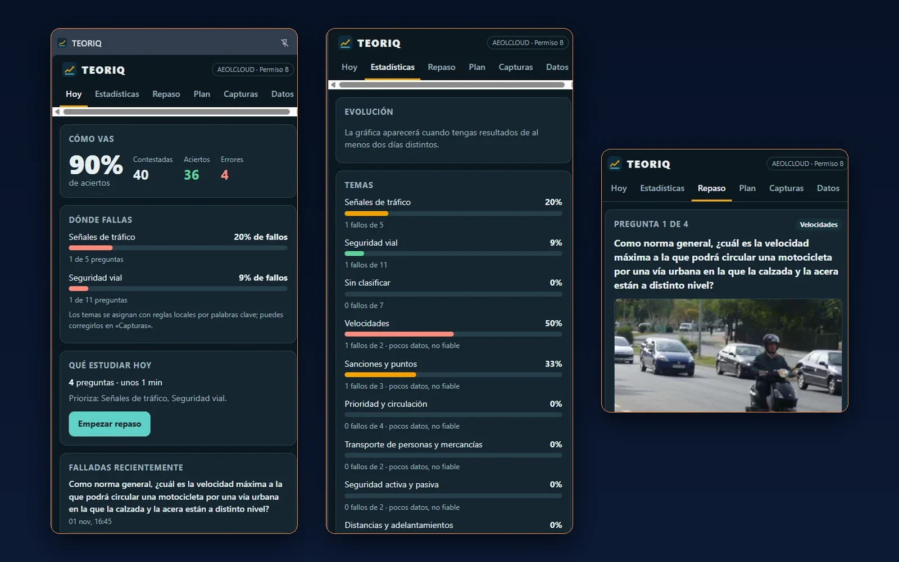
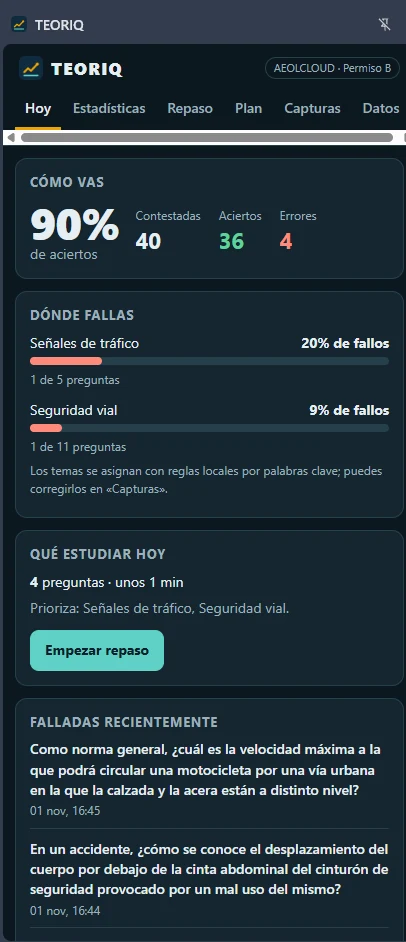
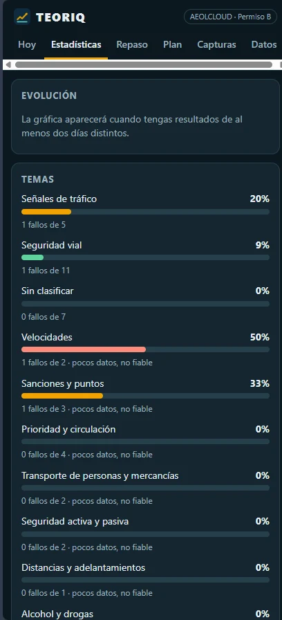
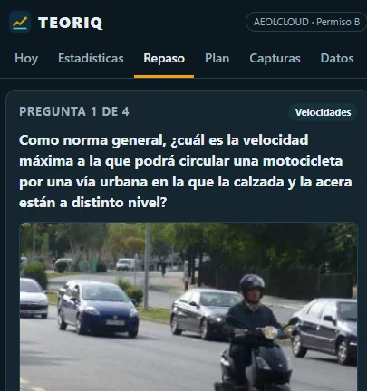

TEORIQ
Extensión que registra automáticamente tus respuestas en los tests del examen teórico de conducir, analiza tus errores y te dice qué repasar cada día. Primera integración: AEOLCLOUD.

El problema
Hacer tests genera muchos datos que normalmente se pierden: qué preguntas fallas, cuáles repites una y otra vez, en qué temas flojeas y cómo evolucionas.
Por qué lo desarrollé
Un test da el resultado pregunta a pregunta, pero no una visión de conjunto. Quise saber dónde fallo de verdad y qué repasar hoy sin llevar apuntes a mano.
Qué propone TEORIQ
Convertir cada test en información útil: registrar los intentos sin esfuerzo, detectar puntos débiles y organizar el repaso con un método de repetición espaciada.
La solución
Así funciona, de principio a fin. El usuario solo hace tests; el resto ocurre en segundo plano.
- Haces tests en AEOLCLOUDComo siempre, en la plataforma.
- TEORIQ detecta la respuestaObserva la página y espera a que la corrección sea real y estable.
- Registra el intento en localUna captura por intento, sin duplicados.
- Analiza el historialAciertos, fallos y evolución por temas.
- Identifica puntos débilesTemas con más fallos y preguntas falladas varias veces.
- Propone qué repasarPreguntas del día y plan de estudio según tu fecha de examen.
Funcionalidades
El panel lateral se organiza en seis secciones: Hoy, Estadísticas, Repaso, Plan, Capturas y Datos.
Captura automática
Registra cada pregunta que contestas, con su resultado, la opción elegida, la correcta y la hora.
Aciertos, fallos y dudas
Detecta la corrección en pantalla. Si algo es ambiguo, lo guarda como «pendiente de revisión» y no cuenta hasta que lo confirmas.
Estadísticas por temas
Porcentaje de fallos por tema, con aviso cuando hay pocos datos para fiarse. Los temas se asignan con reglas locales por palabras clave y se pueden corregir a mano.
Preguntas problemáticas
Detecta las preguntas falladas dos o más veces y las prioriza en el repaso; además, muestra las últimas falladas en la pestaña Hoy.
Repaso con Leitner
Sistema de cajas con intervalos de 1, 3, 7, 14 y 30 días. Un fallo devuelve la pregunta a la primera caja.
Plan de estudio
Según tu fecha de examen y los minutos y preguntas que quieres dedicar al día. Con examen cercano, acorta los intervalos largos.
Imágenes de preguntas
Guarda una copia reducida (JPEG de unos 380 px) para ver la pregunta completa en el repaso, con un límite de espacio controlado.
Copias de seguridad
Exporta e importa el historial en JSON, fusionando sin duplicados o reemplazando. Los archivos inválidos se rechazan.
Revisión manual
La pestaña Capturas permite resolver dudosas, cambiar el tema de una pregunta o borrar intentos.
Capturas reales
Pantallas del panel lateral con datos de uso real durante las primeras pruebas.



Arquitectura y tecnologías
El código específico de cada plataforma está aislado en un adaptador, de modo que el resto de la extensión no depende de AEOLCLOUD.
- AEOLCLOUDPágina con tests
- Adaptador + motor de capturaContent script
- Service workerÚnico que escribe datos
- chrome.storage.localHistorial en tu navegador
- Panel lateralReact · estadísticas y repaso
- Adaptador de AEOLCLOUDLee la pregunta, las opciones, la corrección y la imagen. Es el único código ligado a la plataforma.
- Motor de capturaUsa un MutationObserver, espera a que la corrección se estabilice y emite una captura por intento.
- Service workerRecibe las capturas y las guarda con una cola serializada y sin duplicados.
- Almacenamiento localPersistencia en la Chrome Storage API, con copias de seguridad en JSON.
- Panel lateralInterfaz en React con las seis secciones.
- Motor de estadísticas y repasoCalcula estadísticas por tema, deriva el estado Leitner a partir del historial y genera el plan de estudio.
Privacidad
Es una herramienta personal de estudio y el diseño parte de recoger lo mínimo.
Qué garantiza el diseño
- Los datos permanecen en tu dispositivo
- No necesita cuenta
- No utiliza servidores propios
- No incorpora analítica
- No depende de una API de IA de pago: no tiene funciones de IA
Permisos mínimos
Solo pide storage y sidePanel, y su script únicamente se ejecuta en cloud.aeolservice.es. No accede a otras pestañas ni a otros sitios.
Es un proyecto independiente, no afiliado a AEOLCLOUD ni a la DGT.
Retos técnicos
Lo más delicado fue leer con fiabilidad una página que no está pensada para ser leída por otra herramienta.
Cambios dinámicos de AngularJS
La página se redibuja constantemente. El estado se lleva por pregunta y no por nodo del DOM, porque Angular puede recrear el elemento sin que el intento cambie.
¿Está realmente corregida?
Comprueba la visibilidad real de los iconos de acierto y fallo (clases, estilos y ancestros) antes de dar nada por válido.
Evitar duplicados
Una sola captura por intento y descarte de repeticiones por re-renderizados o dobles envíos.
Correcciones por partes
Espera 500 ms de estabilidad antes de guardar. Si pasas a la siguiente pregunta antes de ese tiempo, se guarda lo último leído en lugar de perder el intento.
Respuestas ambiguas
Cualquier combinación dudosa se marca como pendiente de revisión y no entra en las estadísticas hasta confirmarla.
Imágenes y persistencia
La foto viene incrustada en la página; se reduce con un canvas y se guarda con un presupuesto de espacio. El historial se conserva entre sesiones y se puede exportar.
Resultados y pruebas
Estado de la última auditoría del proyecto (documentada en su ESTADO_PROYECTO.md).
Alcance real de las pruebas: las comprobaciones E2E se ejecutan con Chromium y una página simulada de AEOLCLOUD, sin red. No equivalen a una validación completa de todas las situaciones posibles de la plataforma real. La captura de imágenes, por ejemplo, aún está pendiente de verificar en AEOLCLOUD real.
Estado y aprendizajes
Estado actual
Versión 0.1.0. Se usa mediante instalación local en modo desarrollador; no está publicada en Chrome Web Store. En su primer uso real la captura de aciertos y fallos funcionó.
Qué he aprendido
- El primer uso real destapó un fallo (intentos perdidos al pasar rápido de pregunta) que las pruebas simuladas no mostraban.
- A separar el código de cada plataforma del resto para poder probarlo.
- A no dar por bueno lo dudoso y a documentar las limitaciones.